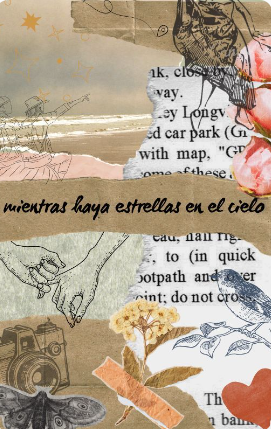
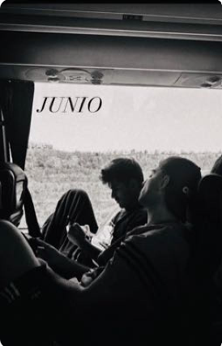

Jugar a la contra (por ti)
Martin acostumbraba a jugar para divertirse con un balón pegado a los pies que le hacía sentirse invencible, pero entonces apareció quien le hizo marcar el gol más importante de su vida. Él rompió sus esquemas, prendió fuego a lo que estaba herido y se armó de valor para conquistar su corazón.
Juanjo siempre jugaba para ganar, porque un buen día soñó con escribir una página en la historia del fútbol, hasta que lo conoció. Él nubló sus sentidos, desordenó sus prioridades y le hizo saber que al cielo también se podía llegar ardiendo en el infierno.
Entre el amor y la ley
A mediados de los años 70, mientras la dictadura en España se tambalea, dos jóvenes de orígenes opuestos ven cómo sus destinos se entrelazan.
Juanjo, el hijo de un estricto coronel del ejército, ha sido criado bajo la disciplina y las normas del régimen, mientras que Martin, un estudiante de clase obrera apasionado por la literatura, lleva en sus venas el espíritu rebelde de su generación.
Lo que comienza como una simple coincidencia en una biblioteca pronto se transforma en una relación que sacude los cimientos de su mundo, llevándolos a cuestionar no solo las creencias impuestas por la sociedad, sino también lo que creían saber sobre ellos mismos.

Mientras haya estrellas en el cieloMartin decide pasar el mes de agosto en un pueblo perdido en medio de la montaña junto a su novio influencer y adicto a las redes sociales...ah, y con el cual quiere romper.
Juanjo está especialmente cansado de que sus padres alquilen una de sus casas a parejas de modernos que vienen a su pueblo a "desconectar"...hasta que aparece un vasco que viene a ponerle la vida patas arriba.

JUNIO
El amor de sus dos mejores amigos hace que Juanjo y Martin se vean envueltos en un viaje a un pueblo de Sevilla durante el mes de junio. La primera noche se dejan llevar por sus deseos pero... ¿Qué ocurrirá después?